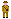

The data used by this visualisation comes from the Commonwealth War Graves Commission website, via a search for War Dead from the First World War serving with the New Zealand Forces. At the time this was created the search returned 18,051 results. Only the the Date of Death has been used.
Each block represents a single person from this list. The list is organised alphabetically by surname.
Created in February 2014 by @theraromachine

WW1Dead by @theraromachine is licensed under a Creative Commons Attribution-NonCommercial-ShareAlike 4.0 International License.